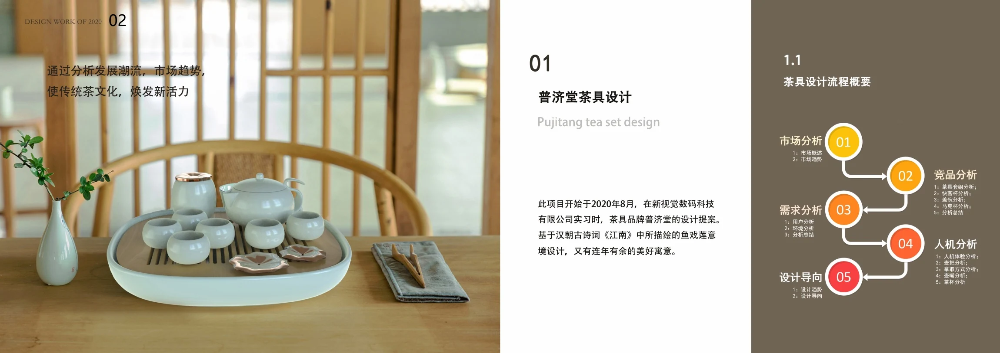
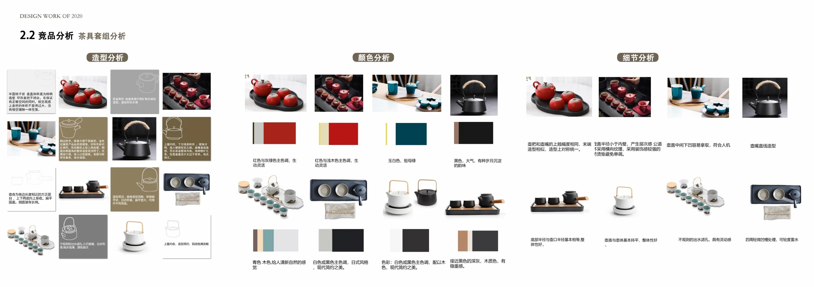
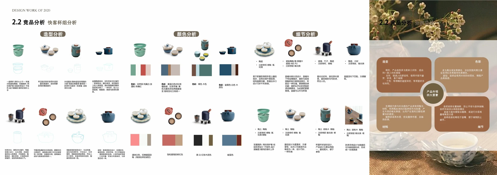
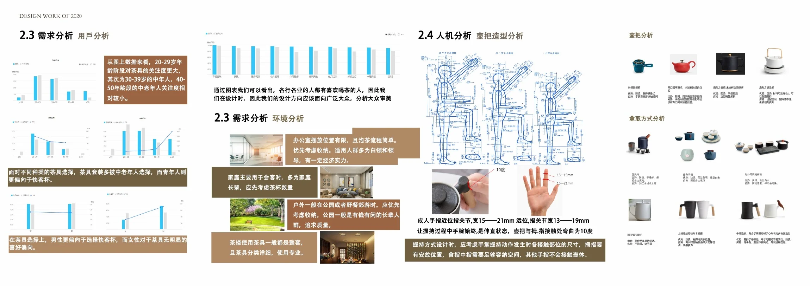
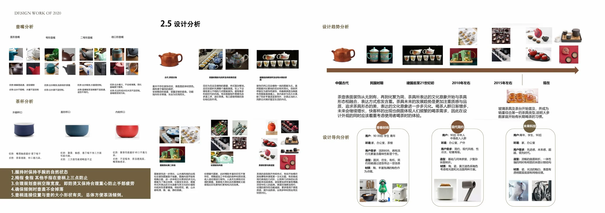
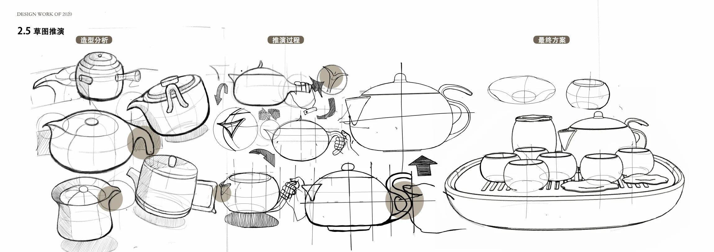
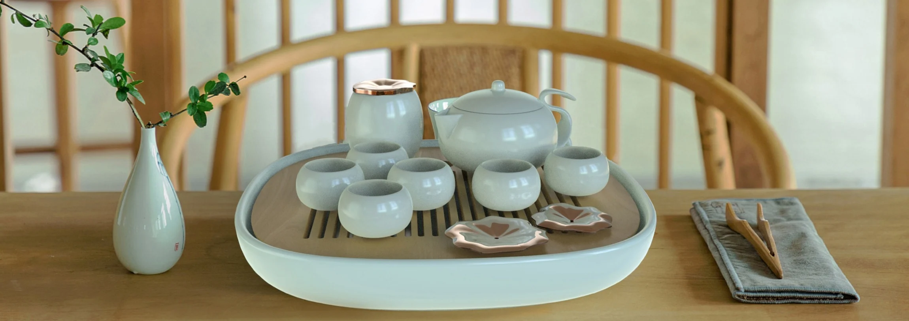

本科 · 生活用品 · 产品设计
普洱茶具设计
Pu’er Tea Set
围绕普洱茶的冲泡、分茶和品饮，探索器形、托盘收纳与使用尺度。

项目概览
调研与器形探索
对比同类茶具的形态与色彩，结合使用需求和人机分析，推敲壶、杯、茶盘的比例与摆放关系。
组合与材质
从手绘方案推演到尺寸设计和配色比较，最后以三维模型和室内场景展示一整套茶具在使用与收纳时的状态。
项目图稿










